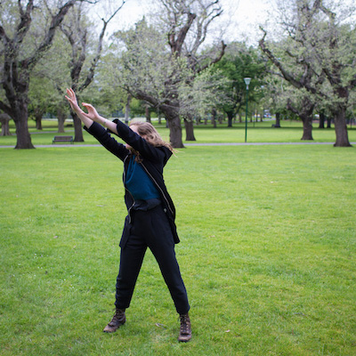
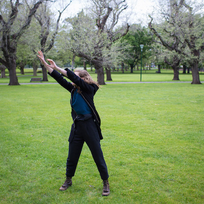
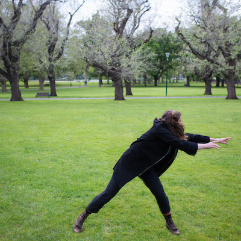
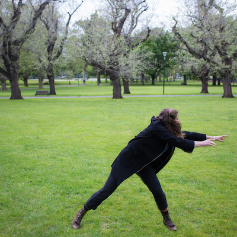

Hannah French is a visual artist and filmmaker hailing from Natimuk, Victoria. Hannah often finds herself working in schools and with young people when not burrowed away in front of a screen.
Since completing a bachelor of Creative Arts at the University of Melbourne and a post graduate diploma in screen production at Griffith University Brisbane, Hannah has worked across many different disciplines, including production design and animation for theatre, production design for film, animation, projection installation, illustration, production management and graphic design.
She is continually fascinated by visual storytelling and the possibilities of stories being presented in surprising ways, and is thus particularly drawn to projection, filmmaking and animation.
 



 


2013
Animator, The 25 Project, Joymas Productions, Brisbane Art Director, Break the Rock, Mohworks Films, Brisbane
2011
Solo Exhibition, Evolve, Kent St Bar, Collingwood
2009
Lead artist, Once Upon a Time in Natimuk, The Nati Frinj, Natimuk Lead artist, Fire Stories: Coming Together Project, Awakenings, Horsham Animator, Picture Stories, Horsham Regional Art Gallery Animator, The Festival For Healthy Living, Warracknabeal
creative type
+61 427 426 624
hannahmfrench@gmail.com